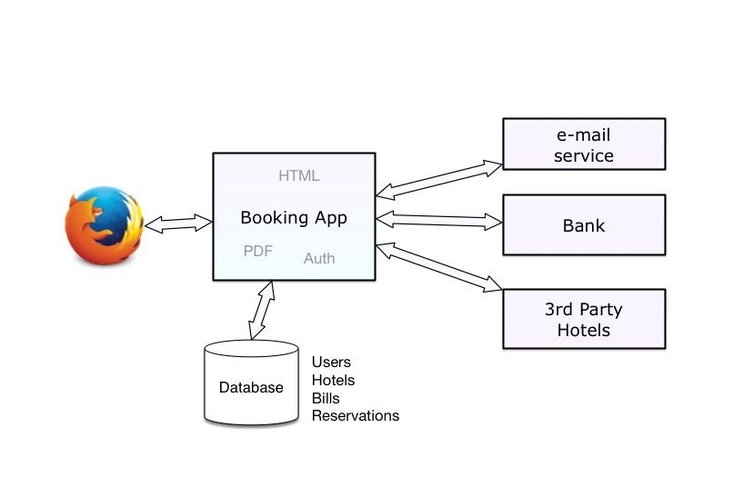
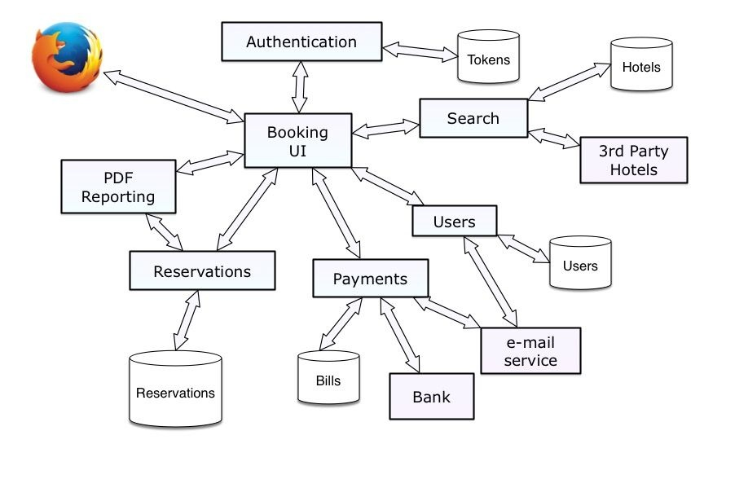

Partially based on companies’ willingness to speed up their release cycles.
They want to be agile by iterating often
“Write a paper promising salvation, make it a structured something or a virtual something, or abstract, distributed or higher-order or applicative, and you can almost be certain of having started a new cult.”
Edsger W. Dijkstra
Plan
A word on Service-Oriented Architecture
Monolithic approach of building an application
Microservices approach of building applications
Benefits of microservices
Pitfalls in microservices
Implementing microservices with Python
Origins of Service-Oriented Architecture
“SOA predates microservices, and its core principle is the idea that you organize applications into a discrete unit of functionality that can be accessed remotely and acted upon and updated independently.”
Service orientation is a paradigm that frames what you do.
Service-oriented architecture (SOA) is a type of architecture that results from applying service orientation.
Goal: help organizations consistently deliver sustainable business value, with increased agility and cost-effectiveness, in line with changing business needs.
SOA Manifesto Priorities
Business value over technical strategy
Strategic goals over project-specific benefits
Intrinsic interoperability over custom integration
Shared services over specific-purpose implementations
Flexibility over optimization
Evolutionary refinement over pursuit of initial perfection
SOA Manifesto Guiding Principles (1)
Respect the social and power structure of the organization.
Recognize that SOA ultimately demands change on many levels.
The scope of SOA adoption can vary. Keep efforts manageable and within meaningful boundaries.
Products and standards alone will neither give you SOA nor apply the service orientation paradigm for you.
SOA Manifesto Guiding Principles (2)
SOA can be realized through a variety of technologies and standards.
Establish a uniform set of enterprise standards and policies based on industry, de facto, and community standards.
Pursue uniformity on the outside while allowing diversity on the inside.
SOA Manifesto Guiding Principles (3)
Identify services through collaboration with business and technology stakeholders.
Maximize service usage by considering the current and future scope of utilization.
Verify that services satisfy business requirements and goals.
Evolve services and their organization in response to real use.
SOA Manifesto Guiding Principles (4)
Separate the different aspects of a system that change at different rates.
Reduce implicit dependencies and publish all external dependencies to increase robustness and reduce the impact of change.
At every level of abstraction, organize each service around a cohesive and manageable unit of functionality
SOA and microservices
At the end of the day, SOA can be everything and anything as long as you are not running all your application code into a single process.
microservices are one specialization of SOA
because they fulfill some of the SOA goals which are to build apps with standalone components that interact with each other.
The monolithic approach
Example: hotel booking site
Search on the hotel website:
It runs a couple of SQL queries against its hotels’ database.
An HTTP request to a partner’s service is made to add more hotels to the list.
An HTML results page is generated using an HTML template engine.
Booking a room
The customer gets created in the database if needed, and has to authenticate.
Payment is carried out by interacting with the bank web service.
The app saves the payment details in the database for legal reasons.
A receipt is generated using a PDF generator.
A recap email is sent to the user using the email service.
A reservation email is forwarded to the third-party hotel using the email service.
A database entry is added to keep track of the reservation.
Booking App Monolithic Architecture
Benefits
Single code base
Deployment is a no-brainer
If your application stays small, this model works well and is easy to maintain for a single team.
Issues (1)
If you need to make a sweeping change that is large in scope such as changing your banking service or your database layer, the whole application gets into a very unstable state.
Small changes can also generate collateral damage because different parts of the system have different uptime and stability requirements.
Issues (2)
Uncontrolled growth
Big software projects usually take a couple of years to mature, and then they slowly start to turn into an incomprehensible mess that’s hard to maintain
As the complexity grows, fewer people fully understand the implications of every small change they make
Summary of the Pros and Cons of the Monolithic Approach
Starting a project as a monolith is easy, and probably the best approach.
A centralized database simplifies the design and organization of the data.
Deploying one application is simple.
Any change in the code can impact unrelated features. When something breaks, the whole application may break.
Solutions to scale your application are limited: you can deploy several instances, but if one particular feature inside the app takes all the resources, it impacts everything.
As the code base grows, it’s hard to keep it clean and under control.
Flask Web App
Helps you
focus on the business logic
split your code into small packages
externalize some of your code into Flask extensions and small Python packages
The UNIX Philosophy: “Small is beautiful.”
But be careful of dependency hell.
The microservice approach
Booking App Microservice Architecture
Components (1)
Booking UI: A frontend service, which generates the web user interface, and interacts with all the other microservices.
PDF reporting service: A very simple service that would create PDFs for the receipts or any other document given a template and some data.
Search: A service that can be queried to get a list of hotels given a city name. This service has its own database.
Components (2)
Payments: A service that interacts with the third-party bank service, and manages a billing database. It also sends e-mails on successful payments.
Reservations: Stores reservations, and generates PDFs.
Users: Stores the user information, and interacts with users via emails.
Authentication: An OAuth 2-based service that returns authentication tokens, which each microservice can use to authenticate when calling others.
In this design, each component communicates using the HTTP protocol, and features are made available through RESTful web services.
There’s no centralized database
Each microservice deals internally with its own data structures
The data that gets in and out uses a language-agnostic format like JSON (or XML or YAML)
Microservices (1)
A web application designed with microservices is a composition of several microservices, which may interact with each other through HTTP to provide the whole system.
A microservice is
a lightweight application, which provides a narrowed list of features with a well-defined contract.
a component with a single responsibility, which can be developed and deployed independently.
Microservices (2)
In the book (and in this course), all our microservices are just simple web applications that
use the HTTP protocol, and
consume and produce JSON when it’s not a UI.
Microservice Benefits
Separation of concerns
Smaller projects to deal with
More scaling and deployment options
Separation of concerns
Each microservice can be developed independently by a separate team (or individual).
Loose coupling:
improves the overall project velocity a lot
similar to the single responsibility principle.
The single responsibility principle (Robert Martin):
a class should have only one reason to change
each class should provide a single, well-defined feature
applied to microservices: each microservice should focus on a single role.
Smaller Projects
Reduce complexity by breaking the project into smaller projects
Each smaller project:
is simpler
could be developed on different frameworks
but integration of the smaller projects together can also create some complexity
Scaling and deployment
Having your application split into components makes it easier to scale depending on your constraints.
CPU-consuming microservices can be deployed on machines with good CPUs, but with less RAM and disk space
RAM-consuming microservices can be deployed on machines with lots of RAM but with weak CPUs or and less disk space
Data-consuming microservices can be deployed on specialized data processing systems, such as Hadoop or Spark
Summary of Microservices Benefits
A team can develop each microservice independently
they can use whatever technological stack makes sense
they can define a custom release cycle
all they need to define is a language-agnostic HTTP API
Developers break the application complexity into logical components: each microservice focuses on doing one thing well.
Since microservices are standalone applications, there’s a finer control on deployments, which makes scaling easier.
Microservices pitfalls
Building an application with microservices
has a lot of benefits
but it’s not a silver bullet by all means
Microservices main problems:
Illogical splitting
More network interactions
Data storing and sharing
Compatibility issues
Testing
Illogical splitting
Premature splitting is the root of all evil.
If there’s any doubt that the split makes sense, keeping the code in the same app is the safe bet.
It’s always easier to split apart some of the code into a new microservice later than to merge back to two microservices in the same code base because the decision turned out to be wrong.
More network interactions
What do we do if a microservice is unreachable because of network issues?
Latency and bandwidth issues
Added costs
Data storing and sharing
An effective microservice needs to be independent of other microservices
Ideally, it should not share a database
Avoiding data duplication as much as possible while keeping microservices in isolation is one of the biggest challenges in designing microservices-based applications.
Compatibility issues
What happens when a feature change impacts several microservices?
Will it work with older versions?
Do you need to change and deploy several services at once?
Does it mean you’ve just stumbled on some services that should probably be merged back together?
A good versioning and API design hygiene help to mitigate those issues
Testing
You need to have a robust and agile deployment process to be efficient.
You need to be able to play with your whole application when you develop it.
You can’t fully test things out with just one piece of the puzzle.
Microservices-style architecture boosts deployment tools innovation, and deployment tools lower the bar for the approval of microservices-style architecture.
Summary of Microservices Pitfalls
Premature splitting of an application into microservices can lead to architectural problems
Network interactions between microservices add weaknesses spots and additional overhead
Testing and deploying microservices can be complex
And the biggest challenge: data sharing between microservices is hard